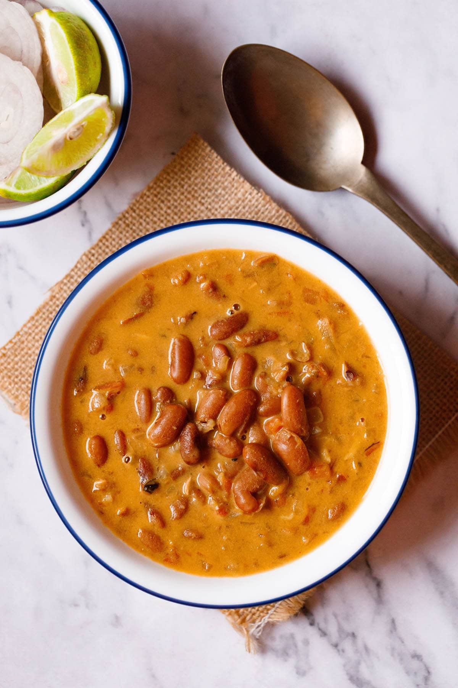

Rajma Masala

This Rajma recipe is a lightly spiced, creamy and delicious Punjabi style curry made with protein rich kidn ey beans, aromatics like onions, ginger, garlic, fragrant spices and tangy tomatoes. My Mom’s recipe for restaurant-style Punjabi Rajma Masala is a staple in our home, and after you try it I’ll bet it becomes one at yours, too. I also share a homestyle one pot Rajma Masala (which many of our readers had requested) that will remind you about the comforting and satisfying Rajma Curry (or Rajma Chawal) made in Punjabi homes
Ingredients
- 1 cup rajma – 200 grams (dried kidney beans), any variety
- 3.5 to 4 cups water for pressure cooking
- enough water for soaking rajma
For Ginger-Garlic-Chilli Paste
- 3 to 4 garlic cloves – medium-sized
- 1 inch ginger
- 1 to 2 green chillies or 1 to 2 Serrano peppers
Other Ingredients
- 2 tablespoons Butter + 1 tablespoon oil or 3 tablespoons butter
- Salt
- Oil
- Spices
Steps
- Soaking::
Rinse and soak the rajma (kidney beans) in enough water overnight or for 8 to 9 hours.
Next day, discard the water and rinse the beans again in fresh water for a couple of times.
Drain all the water